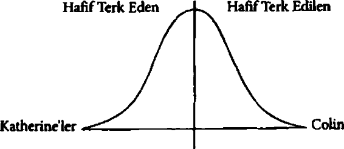

macerası,” dedi Colin. Ayaklarının dibinde ağzına kadar dolu bir büzgülü çanta ve içinde sadece kitap olan bir sırt çantası vardı. Hasan’la siyah deri kanepede oturuyorlardı. Colinln annesiyle babası hemen karşılarındaki birebir aynı kanepedeydi.
Colinin annesi tasvip etmeyen bir metronom gibi başını ritmik bir şekilde salladı. “Nereye?” diye sordu. “Ve neden?” “Alınmayın Bayan Singleton ama,” dedi Hasan ayaklarım sehpaya koyarken (ki bunu yapmaya kesinlikle izin yoktu), “olayı hiç anlamıyorsunuz. Nereye veya neden diye bir şey yok” “Bu yaz yapabileceğin şeyleri bir düşünsene, Colin. Sanskritçe öğrenebilirsin,” dedi babası. “Sanskrit öğrenmek iste
diğini biliyorum.5 Öyle amaçsızca etrafta dolanınca sahiden mutlu olacak mısın? Bu senlik bir şey gibi gelmiyor. Açıkça söyleyeyim, vazgeçmek gibi görünüyor.”
“Neyden vazgeçmek peki baba?”
Babası duraksadı. Sorulan sorulardan sonra hep duraksardı ve konuştuğu zaman içinde hiç ee, şey veya ıtı içermeyen, bütünlüklü cümleler kurardı... sanki vereceği cevabı ezberlemiş gibi. “Bunu söylemek bana çok zor geliyor Colin ancak entelektüel açıdan gelişmeye devam etmek istiyorsan şu sıralar hiç olmadığı kadar fazla çalışman gerekiyor yoksa potansiyelini harcama riskin var.”
“Teknik olarak çoktan harcadım bile,” diye karşılık verdi Colin.
Sebebi Colin'in daha önce annesiyle babasını hiç hayal kırıldığına uğratmamış olması olabilirdi: alkol, uyuşturucu kullanmaz, sigara içmez, siyah göz kalemi çekmez, gece geç vakitlere kadar dışanda kalmaz, kötü not almaz, dilini deldirmez veya tüm sırtına “KATHERINE AŞKSIN SEN” gibi cümleleri dövme yaptırmazdı. Belki de sebebi kendilerini suçlu hissetmeleriydi, sanki o söz konusu oldu mu çuvallamış ve onu bu noktaya kendileri getirmişler gibi... Belki de aralarındaki romantizm ateşini tekrar canlandırabilmek için sadece birkaç hafta kafa dinlemek istemişlerdi. Sebep her ne olursa olsun, harcanan potansiyelinin tasdik edildiği andan beş dakika sonra Co5 Ki bu içler acısı bir dunun olsa da doğruydu. Colin gerçekten Sanskrit öğrenmek istemifti. ölü dillerin Everest’i sayılırdı ne de olsa.
lin Singleton, Şeytan’ın Cenaze Arabası isimli uzun ve gri Oldsmobile’inin direksiyonuna geçmişti.
Arabada Hasan lafa girdi: “Tamam, şimdi tek yapmamız gereken birim eve gidip biraz giysi filan alıp annemle babamı yolculuğa çıkmama mucizevi bir şekilde ikna etmek.”
“Yazın bir işte çalışacağım filan söyleyebilirsin. Bir kampta mesela, ne bileyim,” diye önerdi Colin.
“Neden olmasın, tabii anneme yalan söylemeyecek olmam dışında, yani ne tip bir göt, annesine yalan söyler ki?” “Hımm.”
“Tabii ona bir başkası yalan söyleyebilir. Bu gerçekle yaşayabilirim.”
“İyi,” dedi Colin. Beş dakika sonra Şikago’nun Ravenswood mahallesindeki sokaklardan birine çift sıra park edip arabadan aynı anda indiler. Hasan bir koşu eve girdi, Colin peşinden geliyordu. Hasanın annesi gayet güzel döşenmiş salondaki rahat bir koltukta oturmuş uyukluyordu.
“Pişt, anne,” dedi Hasan. “Uyan.” Annesi irkilerek uyandı, gülümsedi ve iki çocuğa da Arapça selam verdi. Colin de Arapça, “Kız arkadaşım beni terk etti, depresyondayım o yüzden Hasan la bir şeye, şeye, eee, arabayla gidilen tatile çıkacağız. Arapça nasıl diyorsunuz bilmiyorum,” diye karşılık verdi.
Bayan Harbish başım sallayıp dudaklarım büzdü. “Sana ne diyorum ben hep?” Aksanlı konuşuyordu. “Kızlarla uğraşma demiyor muyum? Bak Hasan ne iyi çocuk, şu ‘çıkma’ işlerine hiç karışmıyor. Bak ne kadar mutlu. Ders al ders.”
“Zaten bu yolculukta da bana bunu öğretecek,” dedi Colin ki hiçbir şey hakikatten bu kadar uzak olamazdı. Hasan içinden
kıyafet fışkıran yarı açık bir spor çantasıyla odaya daldı. “Uhi bukf anne,” dedi onu öpmek için eğilirken.
Bir anda Bay Harbish pijamalarıyla salona girdi ve girer girmez, “Hiçbir yere gitmiyorsun,” dedi.
“Baba yapma. Gitmemiz lazım. Şuna baksana. Korkunç halde.” Colin, Bay Harbish’e bakıp olabildiğince korkunç görünmeye çalıştı. “Benimle veya bensiz, her halükârda gidiyor zaten ama en azından bu şekilde ona göz kulak olabilirim.” “Colin iyi çocuk,” dedi Bayan Harbish kocasına.
“Sizi her gün ararım,” diye ekledi Hasan. “Hem o kadar uzun süreliğine de gitmiyoruz. Colin iyileşene dek işte.” Tamamen doğaçlama moduna geçmiş olan Colinln aklına bir fikir gelmişti. “Hasan'a bir iş bulacağım,” dedi Bay Harbishe. “Bence ikimiz de sıkı çalışmanın değerini öğrenmeliyiz.”
Bay Harbish onaylamasına homurdandıktan sonra Hasan’a döndü. “İlk başta televizyondaki o korkunç Yargıç Judy'yı izlememenin değerini öğrenmen gerek Beni bir haftaya aradığında iş bulmuş olursan istediğin yerde istediğin kadar kalabilirsin.” Hasan onun hakaretamiz tavrını fark etmişe benzemiyordu, uysalca mırıldanmakla yetindi: “Teşekkürler baba.” Annesini iki yanağından öpüp hızla dışarı çıktı.
“Ne göt ama,” dedi Hasan, Cenaze Arabası’na sağ salim bindiklerinde. “Beni tembellikle suçlamasına diyeceğim yok ama Amerika’nın en müthiş televizyon avukatına çamur atmak gerçekten adilik.” 6
6 Arapça: “Seni seviyorum.”
Hasan sabaha karşı saat bir civan uyuyakaldı; benzin istasyonlannın ağır kremalı kahveleri ve otobanın gece vakti insana keyif veren yalnızlığıyla yarı sarhoş olmuş Colin 165’ten ve Indianapolis üstünden güneye iniyordu. Haziran başı için ılık saydacak bir geceydi ve Şeytan’ın Cenaze Arabası’nın kliması artık bu binyılda çalışmaktan vazgeçtiği için camlar sonuna kadar açıktı. Araba kullanmanın güzel yanı, ilgisinikenara park etmiş araba var, belki polistir, biz sınırına uy, bu tın sollama vakti geldi, sinyal ver, dikiz aynasına bak, kör nokta için başım eğ, evet, şimdi sol şeridemidesindeki acı verici delikten ayırabilecek kadar meşgul edici olmasıydı.
Zihnini meşgul etmek için başka midelerdeki başka delikleri düşündü. 1914’te öldürülen Arşidük Franz Ferdinand’ı mesela. Karnındaki kanlı deliğe, bakmak için başım eğip, “Bir şey yok,” demişti. Yanılıyordu. Arşidük Franz Ferdinand’m önemli olduğu şüphe götürmezdi tabii, ancak kendisi ne bir üstünzekâlı ne de dâhiydi: Suikastı I. Dünya Savaşı’m tetiklemişti... Ölümüyle 8.528.831 kişinin daha ölümüne yol açmıştı.
Colin, Katilerine! özlüyordu. Özlemek onu kahveden daha ayık tutuyordu ve Hasan bir saat önce direksiyona geçmeyi önerdiğinde Colin kabul etmemişti çünkü araba sürmek devam edebilmesini sağlıyordu... Yüz onu geçme; Tanrım, kalbim gümbür gümbür; kahvenin tadından nefret ediyorum; fena gerildim; tamam, kamyondan uzaklaş; tamam oldu; sağ şerit, artık karanlıkta sırf bizim farlar var. Araba sürmek sevilmemenin yalnızlığını ezici olmaktan kurtarıyordu. Araba sürmek bir düşünme türüydü; o anda kaldırabileceği tek türdü. Yine de
o düşünce, farların aydınlattığı alanın hemen ötesinde sinsice bekliyordu: Terk edilmişti. Katilerine isimli bir kız tarafından. On dokuzuncu sefer.
Konu kızlar olduğunda (ki Colinln durumunda sık sık oluyordu) herkesin bir tipi vardır. Colin Singletonm tipi fiziksel değil, dilbilimseldi: Katherine’lerden hoşlanıyordu. Katie veya Kat veya Kitty veya Cathy veya Rynn veya Trina veya Kay veya Kate veya neme lazım Carilerine değil. KATHERINE. On dokuz kızla çıkmıştı. Hepsinin ismi Katilerine eli. Ve hepsitek tek, her birionu terk etmişti.
Colin dünyada iki tür insan olduğuna inamyordu: Terk Edenler ve Terk Edilenler. Pek çok insan ikisi birden olduğunu iddia edebilirdi ama onlar olayı anlamıyorlardı: Kaderinizde ya bir yana ya öteki yana meyilli olmak vardı. Terk Edenler her zaman kalp kırmıyordu, Terk Edilenler”n de her zaman kalbi kırılmıyordu. Ama herkesin bir yönelimi vardı.7
7 Bunu grafikle düşünmek yardımcı olabilir. Colin Terk Eden/Terk Edilen dikotomisini çan eğrisinde değerlendiriyordu, insanların çoğu ortalarda bir yere toplanmıştı; örneğin, ya hafif Terk Edilenlerdendiler ya da hafif Terk Edenlerden. Ama bir de Katherine’ler ile Colin’ler vardı:

Öyleyse belki de Colin ilişkilerin bu inişli çıkışlı yapısına alışmalıydı. Ne de olsa çıkma eylemi tek bir şekilde sona eriyordu: Feci. Şöyle bir düşünürseniz, ki Colin sık sık bunu yapıyordu, tüm romantik ilişkiler ya (1) ayrılıkla, (2) boşanmayla veya (3) ölümle sona eriyordu. Ama XIX. Katherine farklıydı... ya da en azından farklı görünmüştü. Katherine onu sevmişti ve Colin de onu sevmişti, hem de fena halde. Hâlâ da seviyordu... Araba sürerken kelimeleri zihninde bir araya getirdiğini fark etti: Seni seviyorum, Katherine. Ona söylediğinde ismi dilinde farklı bir tat bırakıyordu; onca zamandır takıntılı olduğu bir isim olmaktan çıkıp sadece onu betimleyen, leylak kokan, gözlerinin mavisini yansıtan, kirpiklerinin uzunluğunu betimleyen bir kelimeye dönüşüyordu.
Rüzgâr camlardan içeri dolarken Colin, Terk Edenleri ve Terk Edilenleri, bir de Arşidük u düşündü. Arkada Hasan sanki bir Alman çoban köpeği olma rüyası görüyormuş gibi homurdanıp burnunu çekiyordu ve Colin midesindeki bitmek tükenmek bilmeyen yanma eşliğinde, tüm bunlar çok ÇOCUKÇA, diye düşünüyordu. İÇLER ACISI. UTANÇ VERİCİSİN. AŞ BUNLARI AŞ BUNLARI AŞ BUNLARI. Ama aşması gereken “bunların” ne olduğundan emin değildi.
I. Katherine: Başlangıcın Başı
Colinln annesiyle babası onun gayet normal olduğunu zannediyorlardı... bir haziran sabahına kadar. Yirmi beş aylık Colin mama sandalyesinde oturmuş, soyu belli olmayan sebze
temelli bir kahvaltı tüketirken babası ufak mutfak masalarının karşı tarafında Chicago Tribüne okuyordu. Colin yaşına göre sıska ama uzundu, kafasından Einsteinvari bir öngörülmezlikle fışkıran kıvır kıvır kahverengi saçları vardı.
“Batı Yakası’nda üç ölö,” demişti Colin lokmasını yutarken. “Daha yeşillik istemem,” diye eklemişti yemeğinden bahsederek.
“Ne oldu, oğlum?”
“Batı Yakası’nda üç ölö. Kızarmış patates isterim, teşekkürler.”8
Coliriin babası gazeteyi çevirip ön sayfanın kat yerinin üstündeki manşete bakmıştı. Bu Colin’in ilk hatırasıydı: Babasının yavaşça gazeteyi indirmesi ve ona gülümsemesi. Babasının gözleri şaşkınlık ve mutlulukla kocaman açılmıştı, gülümsemesini kontrol altına alamıyordu. “CINDY! ÇOCUK GAZETE OKUYOR!” diye haykırmıştı.
Colin’in annesiyle babası okumayı gerçekten ama gerçekten seven insanlardı. Annesi şehir merkezindeki prestijli ve hayli pahalı Kalman Okulu’nda Fransızca dersi veriyordu, babasıysa şehrin hemen kuzeyindeki Northwestem Üniversitesi’nde sosyoloji profesörüydü. Yani Batı Yakası’nda üç kişi öldükten sonra Colin’e her yerde ve her an, temelde İngilizce olmak üzere ama Fransızca resimli kitapları da atlamayarak okumaya başladılar.
Dört ay sonra üstün yetenekli çocuklara özel bir anaokuluna gönderdiler. Anaokul Colin in kendilerine göre fazla
8 Colin tıpkı zeki bir maymun gibi geniş bir kelime haznesine sahipti ama dil
bilgisi zayıftı. Ayrıca "ölü” kelimesinin “ölü” diye telaffuz edildiğini bilmiyorda
Kusuruna bakmayın. Daha iki yaşındaydı yavrucak.
ileride olduğunu söyledi, ayrıca tam tuvalet eğitimi olmayanları zaten kabul etmiyorlardı. Bunun üstüne annesiyle babası Colinl Şikago Üniversitesindeki bir psikologa götürdüler.
Böylece belirli aralıklarla idrarını tutamayan üstünzekâlı çocuk kendini, Güney Yakasındaki küçük, penceresiz bir ofiste, ondan harf ve sayı dizilerindeki düzenleri bulmasını isteyen, kemik gözlüklü bir kadınla konuşurken bulmuştu. Kadın ondan çokgenleri ters çevirmesini istedi. Hangi resmin diğer resimlere uymadığını sordu. Ardı arkası kesilmeyen müthiş sorular yöneltti ve Colin ona bu yüzden bayıldı. O zamana kadar Coline sorulan soruların çoğu altım pisletip pisletmediği veya o felaket yeşilliklerden bir lokma daha yemesinin mümkün olup olmadığıyla ilgiliydi.
Bir saat boyunca soru sorduktan sonra kadın, “Olağanüstü sabnn için sana teşekkür ederim, Colin,” dedi. “Sen çok özelsin.”
Sen çok özelsin. Colin bu cümleyi sık sık duyuyordu ama yine denedenseyetmiyordu.
Kemik gözlüklü kadın, annesini odaya çağırdı. Profesör, Bayan Singletoria Coliriin çok zeki, çok özel bir oğlan olduğunu söylerken Colin harfli ahşap küplerle oynuyordu. Askı kelimesini kısa olarak yeniden düzenlerken göbeği çatlamıştı... Hatırladığı ilk anagramı buydu.
Profesör, Bayan Singletona Colinin yeteneğinin teşvik edilmesi, zorlanmaması gerektiğini söylemiş ve uyarmıştı: “Aşın beklentileriniz olmasın. Colin gibi çocuklar bilgiyi hızlı işler. Görevlere odaklanma konusunda inanılmaz yeteneklidirler.
Ama Colin’in Nobel Ödülü kazanma şansı herhangi bir zeki çocuğunkinden fazla değil.”
O akşam babası ona yeni bir kitap getirmişti: Shel Silverstein’ın Eksik Parçası. Colin kanepede babasının yanına oturmuş, hızla okurken minik elleri koca koca sayfalan çeviriyordu; bir tek “bir şey” ile “bi’şey” kelimelerinin aynı anlama gelip gelmediğini sormak için duraksamıştı. Bitirince kitabın kapağım kapadı.
“Sevdin mi?” diye sordu babası.
“Evet,” dedi Colin. Tüm kitaplan seviyordu çünkü' okuma eyleminin kendisini, sayfa üstündeki çizikleri zihninde kelimelere dönüştürmenin büyüsünü seviyordu.
“Konusu neymiş?” diye sordu babası.
Colin kitabı babasının kucağına bıraktı. “Dairenin bir parçası eksik. Eksik parça pizza şeklinde.”
“Pizza mı, pizza dilimi mi?” Gülümseyen babası kocaman elini Colin in kafasına koydu.
“Evet, baba. Dilim. Daire, parçasını aramaya gidiyor. Bir sürü yanlış parça buluyor. Sonra doğru parçayı buluyor. Ama onu geride bırakıyor. Sonra da bitiyor.”
“Sen de kimi zaman bir parçası eksik bir daire gibi hissediyor musun?” diye sordu babası.
“Baba, ben daire değilim. Oğlanım.”
Bunun üstüne babasının gülümsemesi azıcık da olsa silinmişti. .. üstünzekâlı çocuk okuyabiliyor ama göremiyordu. Eğer Colin asıl kendisinin eksik bir parçasının olduğunu, kendisini
daire öyküsünde görememesinin de düzeltilemeyecek bir sorun olduğunu anlasaydı dünyanın geri kalanının zaman geçtikçe ona yetişeceğini anlayabilirdi. Ezberlediği ama pek anlamadığı bir başka öykü ele alınırsa, kaplumbağa ve tavşan öyküsünün kaplumbağa ve tavşandan ziyade başka şeyler anlattığını anlayabilseydi kendisini pek çok sorundan kurtarabilirdi.
Üç sene sonra Kalman Okuluna girdiğindeannesi orada öğretmen olduğu için ücret vermiyorlardısınıf arkadaşlarının çoğundan sadece bir yaş küçüktü. Babası onu daha fazla ve daha yoğun bir şekilde çalışması için zorluyordu ama Colin on bir yaşında üniversiteye giden ileri zekâlılardan değildi. Hem annesi hem de babası onun “sosyal sağlığı” olarak adlandırdıkları durum adına kısmen normal bir eğitim yolunda ilerlemeleri gerektiğine inanıyorlardı.
Fakat Colinln sosyal sağlığı hiçbir zaman iyi olmamıştı. Arkadaş edinme konusunda başarılı değildi. Sınıf arkadaşlnyla benzer faaliyetlerden hoşlanmıyorlardı. Örneğin, teneffüste yapmayı en çok sevdiği şey robotçuluk oynamaktı. Kollarım iki yanında sopa gibi sallandırıp dizlerinde eklem yokmuşçasına Robert Caseman’ın yanına gider ve monoton bir sesle, “BEN BİR ROBOTUM. HER SORUYU CEVAPLAYABİLİRİM. ON DÖRDÜNCÜ BAŞKANIN KİM OLDUĞUNU ÖĞRENMEK İSTER MİSİN?” gibi şeyler söylerdi.
“Peki,” derdi Robert. “Sorum şu: Neden embesilce işler yapıyorsun, Kolon Kanseri?” Colin in ismi kolin diye telaffuz edilmesine rağmen Robert Casemanm birinci sınıfta oynamayı en çok sevdiği oyun Colin ağlayana kadar ona “Kolon Kan
seri” demekti İd bu çok uzun zaman almıyordu çünkü Colin, annesinin deyimiyle “hassas” bir çocuktu. Altı üstü robotçuluk oynamak istiyordu. Ne vardı yani bunda?
ikinci sımfta Robert Caseman ve benzerleri biraz olgunlaştılar. Sonunda tahriklerin gelip geçici olduğunu ama can yakmak istiyorlarsa fiziksel bir çaba harcamaları gerektiğini çözünce Karmdeşen Jack’mece oyununu icat ettiler.9 Yere yatmasını emrediyorlardı (o da nedense kabul ediyordu) ve dört çocuk, kollarıyla bacaklarından tutup çekiyordu. Sürükleme ve dörde bölme türü bir şeydi ancak yedi yaşındakiler çekiştirince ölümcül sonuçlar doğmuyordu, sadece utanç verid ve aptalcaydı. Colin’e kimse kendisini sevmiyormuş gibi hissettiriyordu ki gerçekten de kimse onu sevmiyordu. Tek tesellisi günün birinde önemli olacağı düşüncesiydi. Ünlü olacaktı. Ve onlardan hiçbiri olamayacaktı. Bu yüzden onunla dalga geçtiklerini söylüyordu annesi. “Seni kıskanıyorlar da ondan,” diyordu. Ama Colin işin aslım biliyordu. Onlar kıskanmıyorlardı. Kendisi hoşlanılacak bir çocuk değildi sadece. Bazen olay bu kadar basitti.
Bu yüzden üçüncü sınıf başladıktan kısa süre sonra Colin Singleton tüm Şikago’daki en güzel sekiz yaşındaki kızın kalbini (kısa süreliğine de olsa) kazanarak sosyal sağlığının yerinde olduğunu kanıtlayınca hem Colin hem de annesiyle babası müthiş mutlu olmuş ve rahadamışlardı.
9 Ki kayıtlara geçsin, bu ismi Colin bulmuştu. Diğerleri buna sadece “Çekmece” diyorlardı ama bir gün tam da bunu yapacakları sırada Colin, “Yine mi Karındeşen Jack'mece!” diye haykırmıştı ve isim o kadar zekiceydi ki yapışıp kalmıştı.